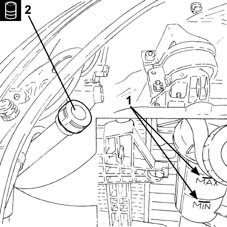
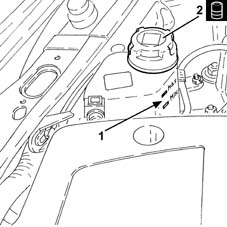

0010T21 coolant check density and top up if necessary
- Path
- Procedures > 00 MAINTENANCE > 0010 NEW UNITS AND PLANNED MAINTENANCE'. > 0010T vehicle oil and fluids > 0010T21 coolant check density and top up if necessary
- Kind
- repair procedure (removal / refitting; the operation number is the code)
- Applies to
- all engines; all production periods
- Interactive page
- https://sloeber94.github.io/elrnDB-lYpsln/en/#/2428825
Applies to: engines: 1.2 8v; all production periods
Make sure that the bleed on the radiator and the bleed on the coolant return pipe from the heater are shut.
1. Check that the engine coolant level is on the MAX notch on the reservoir.
2. If necessary, top up the level by unscrewing the cap and adding coolant.
 | Type | Component | Name | Qty. |
|---|---|---|---|---|
2 | Fluid | "PARAFLU" ANTI-FREEZE FLUID | Mixture of 50% PARAFLU UP /water | 4.6 |
Fully tighten the cap on the engine coolant reservoir.

Applies to: engines: 1.2 16v; all production periods
Make sure that the bleed on the radiator and the bleed on the coolant return pipe from the heater are shut.
1. Check that the engine coolant level is on the MAX notch on the reservoir.
2. If necessary, top up the level by unscrewing the cap and adding coolant.
| Type | Component | Name | Qty. |
|---|---|---|---|---|
2 | Fluid | "PARAFLU" ANTI-FREEZE FLUID | Mixture of 50% PARAFLU UP /water | 4.6 |
Fully tighten the cap on the engine coolant reservoir.
Applies to: engines: 1.4 16v; all production periods
With the engine cold, remove the cap from the engine coolant reservoir.
Make sure that the bleed on the radiator and the bleed on the coolant return pipe from the heater are shut.
1. Check that the engine coolant level is on the MAX notch on the reservoir.
2. If necessary, top up the level by unscrewing the cap and adding coolant.
| Type | Component | Name | Qty. |
|---|---|---|---|---|
2 | Fluid [l] | "PARAFLU" ANTI-FREEZE FLUID | Mixture of 50% PARAFLU UP /water | 4.8 |
Applies to: engines: 1.3 JTD; all production periods
.
1. Check that the coolant level is between the MIN and MAX marks on the expansion tank.
2. If necessary, top up the level by unscrewing the cap and adding coolant.
| Type | Component | Name | Qty. |
|---|---|---|---|---|
2 | Fluid [l] | "PARAFLU" ANTI-FREEZE FLUID | Mixture of 50% PARAFLU UP /water | 6.0 |

Applies to: engines: 1.2 8v; all production periods
For cars with air conditioning, make sure that the air conditioner is off (OFF position).
Start the engine and let it idle for about two or three minutes.
Pump the accelerator gradually at intervals (every 30 seconds or so) up to about 3000 rpm, until the cooling fan switches on and off at least three times in order to discharge air from the system.
Pump the accelerator again for a period of 10 min., bringing the engine rpm up to about 4500 rpm.
Stop the engine
After allowing the engine to cool down, if necessary top up to the MAX notch indicating the maximum permitted level inthe expansion tank, or if there is an excess, remove using a syringe.
Applies to: engines: 1.2 16v; all production periods
For cars with air conditioning, make sure that the air conditioner is off (OFF position).
Start the engine and let it idle for about two or three minutes.
Pump the accelerator gradually at intervals (every 30 seconds or so) up to about 3000 rpm, until the cooling fan switches on and off at least three times in order to discharge air from the system.
Pump the accelerator again for a period of 10 min., bringing the engine rpm up to about 4500 rpm.
Stop the engine
After allowing the engine to cool down, if necessary top up to the MAX notch indicating the maximum permitted level inthe expansion tank, or if there is an excess, remove using a syringe.
Applies to: engines: 1.4 16v; all production periods
For cars with air conditioning, make sure that the air conditioner is off (OFF position).
Start the engine and let it idle for about two or three minutes.
Pump the accelerator gradually at intervals (every 30 seconds or so) up to about 3000 rpm, until the cooling fan switches on and off at least three times in order to discharge air from the system.
Continue the operation until no further changes in level are observed.
Fully tighten the cap on the engine coolant reservoir.
Pump the accelerator again for a period of 10 min., bringing the engine rpm up to about 4500 rpm.
Stop the engine
After allowing the engine to cool down, if necessary top up to the MAX notch indicating the maximum permitted level inthe expansion tank, or if there is an excess, remove using a syringe.
Applies to: engines: 1.3 JTD; all production periods
Fully tighten the cap on the engine coolant reservoir.
Start the engine and let it idle for a few minutes.
Turn off the engine and wait for a few minutes.
Recheck that the engine coolant level is between the MIN and MAX marks found on the coolant reservoir.
Topics that link to this page (9)
- 0010K20 20,000km service coupon, emission control version
- 0010K40 40,000km service coupon, emission control versions
- 0010K60 60,000km service coupon - emission control versions
- 0010K80 80,000km service coupon - emission control versions
- 0010M01 100,000km service coupon, emission control versions
- 0010M20 120,000km service coupon, emission control versions
- 0010M40 140,000km service coupon - emission control versions
- 0010M60 160,000km service coupon - emission control versions
- 0010M80 180,000km service coupon - emission control versions